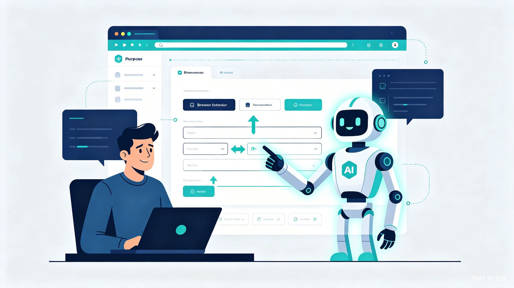

基于 MCP 的 AI 浏览器操作引导插件
智引（GuideAI）—— 一款基于浏览器扩展形态的 AI 智能操作引导助手。
当用户面对功能繁杂的网页后台、企业级 SaaS 平台或新上线的业务系统时，文字说明往往难以让人精准定位下一步该点击哪里、填写什么。智引通过 AI 实时解析页面结构，将冗长的操作手册转化为一步步可视化的交互指引，直接标注在页面上，让用户「一看就懂、一点就会」。
这个创意源于一个日常观察：很多同事在首次使用 CRM、ERP 或数据分析平台时，需要反复对照截图教程才能完成任务；客服团队也常被「这个按钮在哪里」这类问题淹没。如果 AI 能直接「看懂」网页并像真人一样在屏幕上画箭头、高亮元素，教学成本将大幅降低。
智引是一款浏览器插件（Chrome / Edge / Firefox 扩展），用户安装后可在任意网页唤起侧边栏或悬浮面板，与 AI 对话并接收实时操作指引。
新人第一次登录公司 OA 系统，需要完成请假申请、报销提交等流程。智引根据页面自动生成步骤指引，无需人工带教。
用户反馈找不到退款入口，客服通过智引发送一条 AI 引导链接，用户端自动高亮「我的订单 > 申请售后」路径。
分析师使用 BI 工具制作报表，智引根据用户目标（如「生成月度销售漏斗图」）逐步引导筛选条件、拖拽维度、设置图表类型。
没有智引时，用户只能依赖静态截图文档或录制好的视频教程。这些材料更新滞后、检索困难，且无法根据页面实际变化动态调整。企业为此投入大量人力做重复培训，用户的学习曲线依然陡峭。
智引将「阅读文档 → 理解步骤 → 在页面中寻找对应元素」的线性过程，压缩为「说出需求 → 接收高亮指引」的即时反馈。对于高频使用的业务系统，单人次操作培训时间可从 30 分钟缩短至 3 分钟，且无需专人陪同。
对企业客户而言，智引可作为 SaaS 产品的增值模块或独立插件出售，降低客服工单量与培训成本。对个人用户，免费基础版 + 高级企业版的订阅模式具备清晰的盈利路径。此外，插件积累的页面操作数据可反哺产品团队，用于识别高频卡点、优化信息架构。
智引降低了数字工具的使用门槛，让不熟悉互联网操作的群体也能独立完成在线办事、医疗挂号、政务申请等流程，在一定程度上弥合数字鸿沟。
智引的核心能力建立在成熟的浏览器自动化与 AI 理解框架之上。插件通过内容脚本（Content Script）注入目标页面，利用 DOM 解析与元素定位技术获取页面结构；同时借助 MCP（Model Context Protocol）等标准化协议，让大模型能够「看见」网页并规划操作路径。
flowchart LR
A[用户输入需求] --> B[AI 解析意图]
B --> C[读取页面 DOM]
C --> D[生成操作步骤]
D --> E[高亮页面元素]
E --> F[用户执行操作]
F --> G{是否完成?}
G -->|否| B
G -->|是| H[结束引导]
| 功能模块 | 说明 | 优先级 |
|---|---|---|
| 智能对话引导 | 用户用自然语言描述目标，AI 返回分步指引 | P0 |
| 页面元素高亮 | 自动识别并高亮下一步应点击/填写的元素 | P0 |
| 操作手册导入 | 上传文档后 AI 自动解析并生成引导流程 | P1 |
| 引导录制与分享 | 将引导过程保存为链接，发送给他人一键复用 | P1 |
| 多语言支持 | 引导文案自动适配用户浏览器语言 | P2 |
市面上已有一些产品尝试解决类似问题，但智引在 AI 原生能力与通用性上具备明显差异。
| 产品 | 形态 | 局限 | 智引的差异化 |
|---|---|---|---|
| WalkMe / Whatfix | 企业级数字采纳平台 | 需预先配置工作流，成本高，不灵活 | AI 实时解析，无需预先配置，即装即用 |
| Scribe | 操作录制与文档生成 | 只能记录已发生的操作，无法主动引导 | 支持 AI 主动规划步骤，而非被动录制 |
| 浏览器自带帮助 | 静态提示或 FAQ | 无法针对具体页面状态给出动态指引 | 基于当前页面上下文实时生成指引 |
智引的愿景不仅是做一个「操作说明书」，而是成为用户在网页世界里的 AI 副驾驶。未来可以拓展的方向包括：